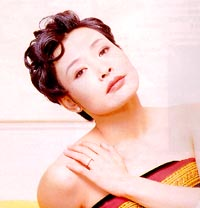
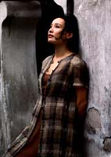
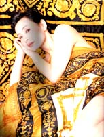
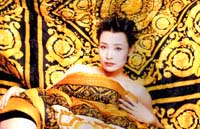
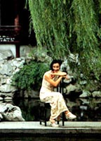
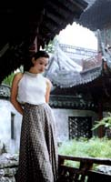

|  |
|
面对镜头，时而魅惑，时而端庄，她是一个天生的女明星。 |
| 促膝而坐，热情坦率，眼界宽广，她是一个难得的思想者。 |
|
|
|
| 陈冲眼里的自己 |
| 我是一个做事凭直觉的人，从来没有事先计划要走在潮流的前面之类。走到今天这一步，凭的是直觉，也许还有点运气和命运吧。大家看到的都是我得到的机会，其实，我也有为了这些得到而失去的东西，也错失过许多机会。
如果说，有什么指引我选择我至今为止的发展道路的话，我想是我灵魂深处的一种不安。这种不安的感觉，总是驱使我离开一个很安乐的位置，向前跑。一旦安乐了，我就必须要走了。
|
 |
|
| 陈冲眼里的电影 |
|  |
我觉得男女性别对于电影的影响也许也会有。但也要因人而异。每个人的经历不同，对生活的感悟不同，分泌的荷而蒙也不同。
我不知道我会不会是个女性气质的导演。我定不下来。我只能从自己出发，我当然是一个女性，但说实话，我并不很懂什么是女性电影。我很期待中国人能看我的电影，但不知道最后审查结果如何。主要是因为，这是我导的第一部电影，我已经有金钱上的约束、经验上的约束，再不想有其他约束，所以干脆先拍出来再说。你看我现在谈笑风生，其实我焦头烂额。我对电影的兴趣蛮广的。象《教父》、《棉花俱乐部》这一类电影，我蛮喜欢的。我也喜欢看法国的那些微妙的电影比如《红白蓝》这样的。甚至有一两部动作片也爱看的。因为我实在太爱电影了，看每一部电影，不论好坏，都是微张着嘴、欺身上前，完全投入地在看。 |
|
| 陈冲的好莱坞之缘 |
| 我是偶然进入好莱坞的。刚到美国的时候，我也在餐馆打工。渐渐有人传出说我是明星。于是有同学就开玩笑般地问我：你真的拍过电影？那你为什么还来打工？我说，没办法。他们说你去试试看，好莱坞一天可以赚到你一个月的钱，你去试试。我就去试了。正好王颖有个电影。不知道谁告诉我的，说暑假的时候你来吧。我说好，从此开始有了代理人。 |
 |
| 我第一次独自去好莱坞应试，看见几百个女孩子在排队，都是冲着这角色来的，都非常漂亮，吓得我赶紧回家。在好莱坞演的第一个小角色是一个无台词的中国小姐，穿旗袍、高跟鞋、在台上走过。第二个角色也只有一句台词，那个角色说的唯一一句话是：海默先生，你要一些茶吗？两个角色都太微不足道，但就是凭着这两个角色，我入了工会。我念书的时候一直没有悟到电影对于我的意义价值。那时的我，要求很低。心里对能够到美国读书已经很知足，觉得到好莱坞演电影是不可能的事，所以连想也没想过。说起来，在去好莱坞的时候，我已经在国内得过百花奖和政府奖性质等先进电影工作得奖。但最初在好莱坞自我介绍时，这经历不值一提，因为没有人会相信。” |
|
| 陈冲永远的事业 |
| 我同许多很差的导演合作过，感觉非常痛苦。在好莱坞，拍过那么三四部非常没有水准的电影。现在的我觉得我没必要这样做，因为已经不缺钱了。而我自己是有想法的，又有愿望要去表达这种想法。同时，我觉得积累了20年的经验，我必须学会去表达。演员只是一种片面的表达，导演的天地要宽得多。 |
|  |
还有一个原因，演员这个职业，到了我这样年龄层次的女人，能有的角色会越来越少。市面上喜欢看的是小女孩，我看到很多中年女人还在演青春，我觉得悲哀。一个人的生活经历是那么地宝贵，你活过来了，你为什么还要去装，去抹杀掉你的经历装得无知，花很大的工夫去夺取人家应该最容易做的事。当然，这是显示了一个人的功力，也是明星到了一定程度有人爱看。但我觉得我做不到。因为我不想抹杀我的经历，我想表达我的经历。何必呢？生活过来也不容易。如果说，几年前，我还在想我可以做这个，我可以做那个，到了现在却终于知道电影是一辈子的事情了，这样的情况下，我想发展导演。 |
|
| 陈冲的家庭文化背景 |
| 家庭是一切的摇篮，对我来说，家庭的熏陶很重要。我的家庭非常自由，没有任何逼迫，不会逼你做这做那。三岁的时候玩泥巴，就出去玩泥巴，不要作功课就不要作功课。父母只是用他们自己的言行自然而然地来影响你，让你发挥到你自己有一个自己地天地。考大学也好、出国留学也好，在这样的家庭里，都是顺理成章的愿望。
我外公是留英回国的中国西医药理学的鼻祖，我姥姥也是从中央大学毕业后去英国的。可能，由于他们，我得以比较早和自然地接受一些外国文化。但是，我自己打算去美国留学，却是由于我妈妈文革后被派去美国作研究。从阅读她给我寄来的零星的美国杂志上，渐渐的，对美国文化有一种好奇，希望去那里，但到美国应该干什么，我都不知道。
|
 |
|
| 陈冲未来的理想 |
|
关于理想，我现在已经有点玩世不恭了，但曾经，我非常地不玩世不恭，而且有过理想，我怀念这样一些东西。
76年的时候，我15岁，我的电影中的那个女孩子16、17岁，差不多是我自己的成长年代。可以说我的片子是有着怀旧基调的，但这种怀旧比较抽象。 |
我觉得当年的青春毕竟燃烧过，而今天的青春已经不再燃烧了，所以，不管它的政治内容是什么，──也许根本没有政治内容──我想诉说的是对青春、一种燃烧的青春的怀念。
我对拍刘胡兰这个题材非常感兴趣。刘胡兰是我们这代人当中最大的一个“猫王”。在我的脑子里，这个戏完全是国际性的题材，信仰的美丽、人性的美丽。从一个女孩子到15岁献身，这个过程太感了。整个故事，应该非常理想、浪漫化。一个15岁的人说：“是的，我是共产党的候补党员。”说这句话的时候，非常感人，很强烈。那是一种信仰，人类的精神支柱。
|
|
| 陈冲心中的爱情 |
| 我理想的生活状态，应该是这样一幅画，夫妇两个是连在一起的大树，大树底下，象蘑菇一样围着一圈我们的孩子。而朋友就是不远处的树林，有风微微吹过，叶子哗哗地倒过来，我们就做些交流。当然，这只是心中的图画，没有可能办到。所以，理想的生活，就是找对自己的位置，做自己想做的事，能够有正确的取舍。没有东西是你可以白白得到的，而幸福就是你选择了你真正应该选择、渴望得到的东西。
爱情对我来说，是一件困难的事情。我不认为《廊桥遗梦》那四天是爱情，反倒是法兰西斯同她丈夫之间的感情才是爱情。她丈夫临终前对她说：“很抱歉，有些东西我明白，但我没办法给你。爱情就是这样长时期的积累、共同承担过来的，其中不仅仅是平静，也有热烈、激烈的感受，是同甘共苦，那么长的时间，两个人一起走过来了。 |
|
| 这样吧，我说一个故事，我觉得那故事说出了我对爱情的理解。是一个叫《小王子》的故事。说的是宇宙中有一个小王子，在他们那里只有一朵玫瑰，所以，他视若珍宝，日日夜夜精心呵护。有一天，他偶然来到一个玫瑰园，突然发现，原来世界上有这么多比他拥有的好得多的玫瑰。他一下感到很沮丧。但慢慢就想通了，这么多好看的玫瑰，没有一条是得到过他给他的那朵玫瑰那样的独一无二的精心呵护。他的玫瑰，是因为得到了他长年累月的关爱和照顾，才对他显得那么重要的。 |
|